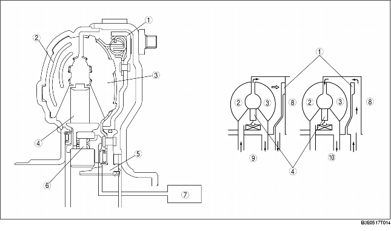

Torque converter structure
• The torque converter with the TCC control consists of the turbine runner, pump impeller, stator, and the TCC piston as shown in the figure. The TCC piston engages with the turbine runner and slides on the turbine hub to be pushed and contacts with the torque converter cover during the TCC control operation. In the TCC piston, a spring for torsion damper is installed to absorb the engine torque fluctuation during TCC control.
